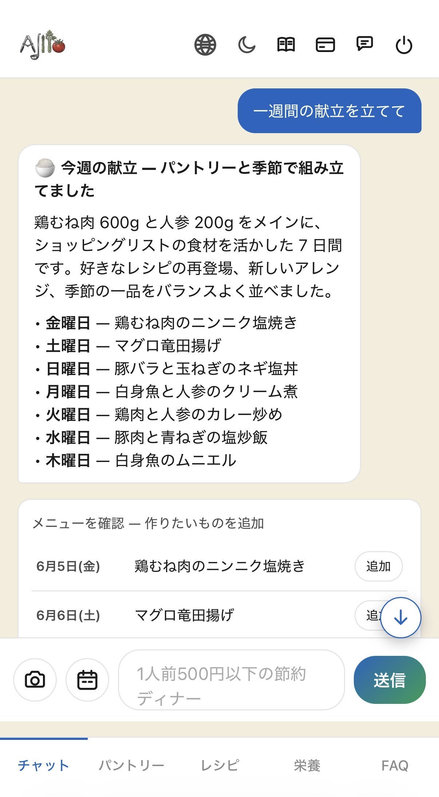
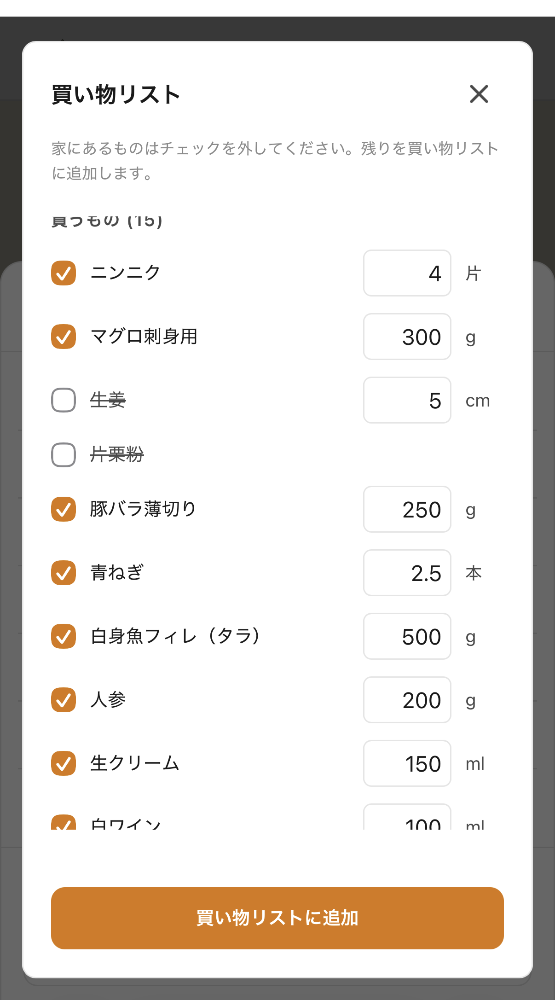
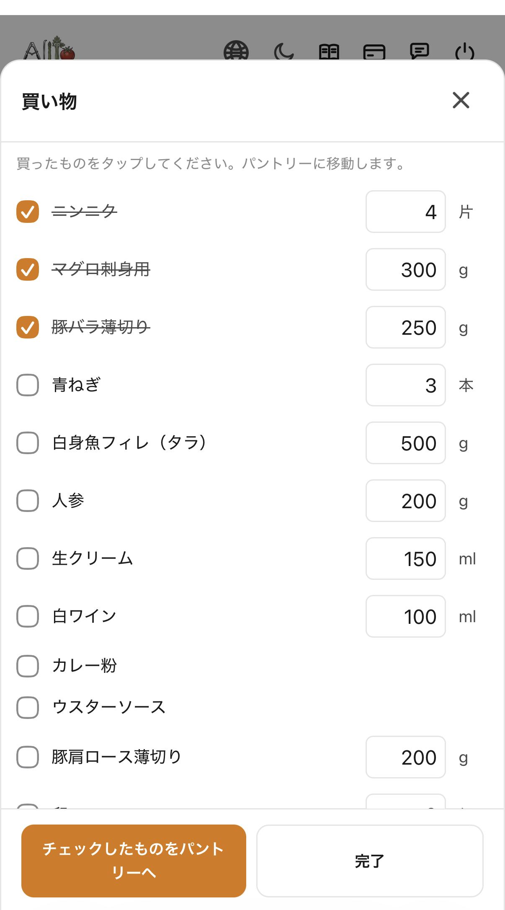

3つのステップで完了。使うほど、あじとはあなたのキッチンを理解します。
プランナーを開いて、あじとに今週の献立をお願いするだけ。パントリーの中身を起点に7日分の夕食を提案します。気に入ったものをピン留め、気に入らないものは入れ替え。

あじとが各レシピをパントリーと照合します。すでにあるものはチェックを外せば、残りが分量調整付きで買い物リストへ。

お店では買い物モードを開いて、カゴに入れたものをタップ。取り消し線が付いて、そのままパントリーに移動。今夜の調理にすぐ使えます。

日本語、英語、フランス語で会話可能。会話の途中でも切り替えOK。レシピ、単位、食材名がお使いの言語に合わせて表示されます。
冷蔵庫、レシート、料理の写真を送ると、あじとが内容を読み取りパントリーを更新。手入力は不要です。
パントリー、好み、避けたい食材、保存したレシピ — あじとが時間とともに精度を高めていく、あなただけのライブラリを構築します。
週間献立、自動買い物リスト作成、お店モードで購入時にそのままパントリーに反映。
データは東京リージョンのサーバーに保管。写真は30日後に自動削除。AI プロバイダーはゼロリテンション運用。あなたのキッチンは学習データになりません。
ホーム画面に追加してすぐ使えます。アプリストア不要。メールでサインイン — 電話番号もパスワードも不要。
毎晩、料理で一番大変なのは「作ること」ではなく「何を作るか決めること」でした。
汎用のAIアシスタントも試しました。レシピは悪くない。でも会話のたびに、冷蔵庫の中身、家族の好み、昨日作ったもの、毎回ゼロから説明し直す必要がありました。
「覚えてくれるAI」が欲しかった。冷蔵庫の中身を知っていて、子どもが本当に食べるものを知っていて、今週何を食べたか覚えているAI。だから自分で作りました。
— Chase（創業者）
「ちゃんと会話できるのがいい。料理本は質問に答えてくれないけど、あじとは答えてくれる。」
「ネットでレシピを検索する感覚に近い。でも、自分のキッチンの情報を全部知ってくれている分、ずっと強力。」
「うちの子は卵アレルギー。あじとは毎回、自動で卵を除外してくれる。原材料を何度も読み返さなくていい。」
「買い物リスト機能で、数日先までの献立計画がぐっと楽になった。一回見直して、買い物に行くだけ。」
月額制（税込）。14日間無料、クレジットカード不要。
1人の料理人、1つのキッチン。
¥980/月 ¥735/月（FOUNDING25適用 初年度12ヶ月）
または ¥9,800/年 — 17%オフ。
ご家族向け、最大5端末まで。
¥1,980/月 ¥1,485/月（FOUNDING25適用 初年度12ヶ月）
または ¥19,800/年 — 17%オフ。
プランを選んでお支払いを開始します。クレジットカードを自動で請求することはありません — トライアル時にカード登録は不要なので、ご自身で申し込まれた場合のみ請求が発生します。
はい。アカウント設定から、またはメールで解約できます。すでにお支払い済みの期間の終わりまでご利用いただけます。
日本語、英語、フランス語に完全対応 — パントリー、レシピ、献立の日付、買い物リストのインターフェースすべて含めて。いつでも言語切り替え可能です。
表示価格はすべて消費税10%込みです。日本以外のお客様は、決済時にお住まいの国の通貨で表示され、現地税は決済プロバイダー（Lemon Squeezy）が処理します。
アカウントデータはSupabaseの東京（ap-northeast-1）リージョンに保管されます。AIのリクエストはAnthropic社で処理されますが、ゼロリテンション契約により、チャット内容は学習に使われません。プライバシーポリシー全文。
25%割引は契約初年度12ヶ月間適用されます。12ヶ月後は通常料金に移行します。